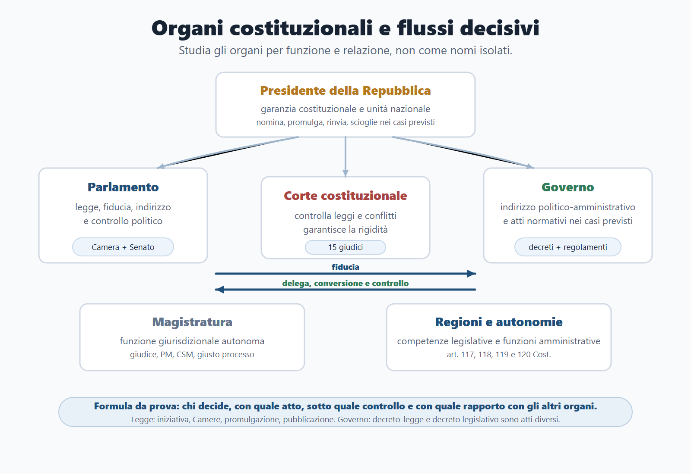
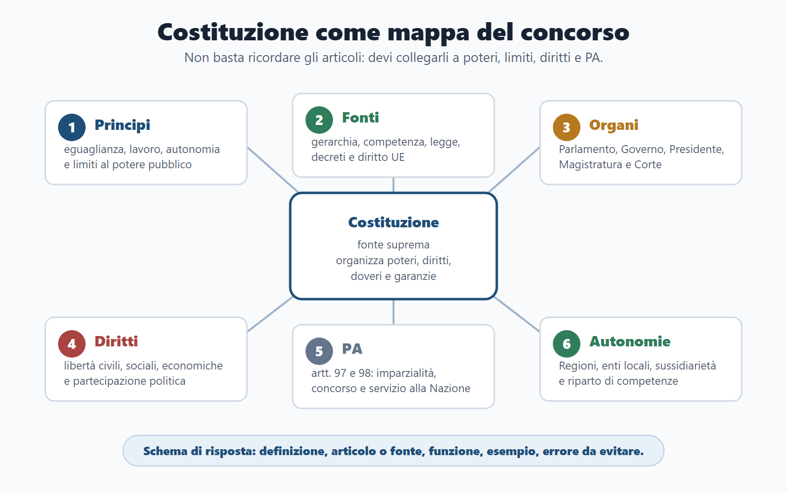
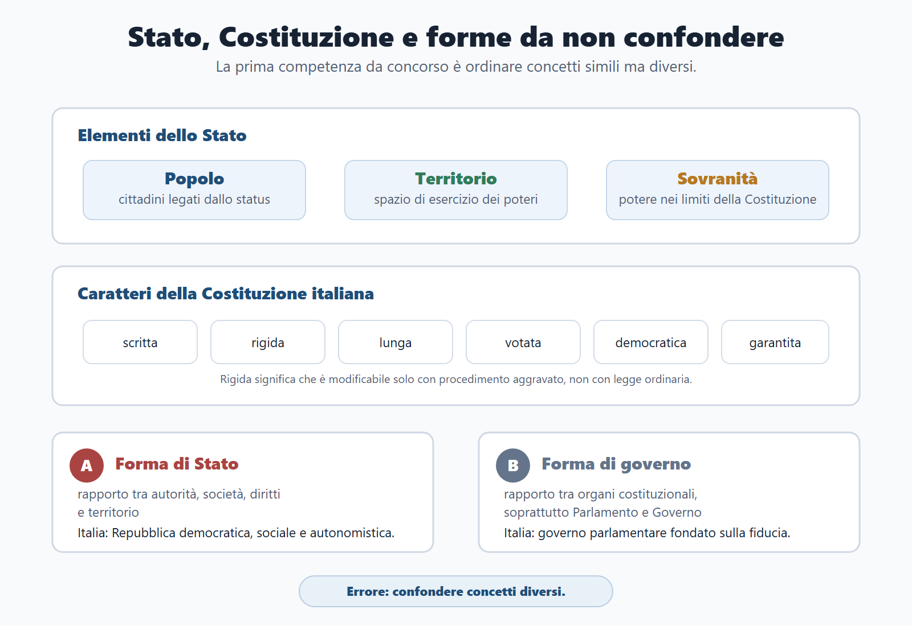
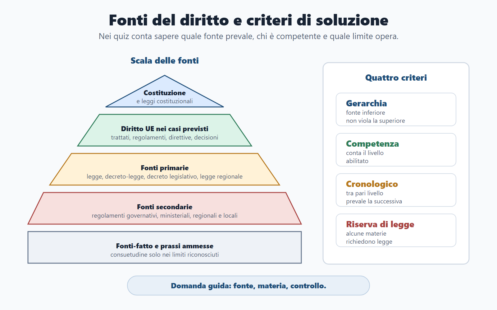
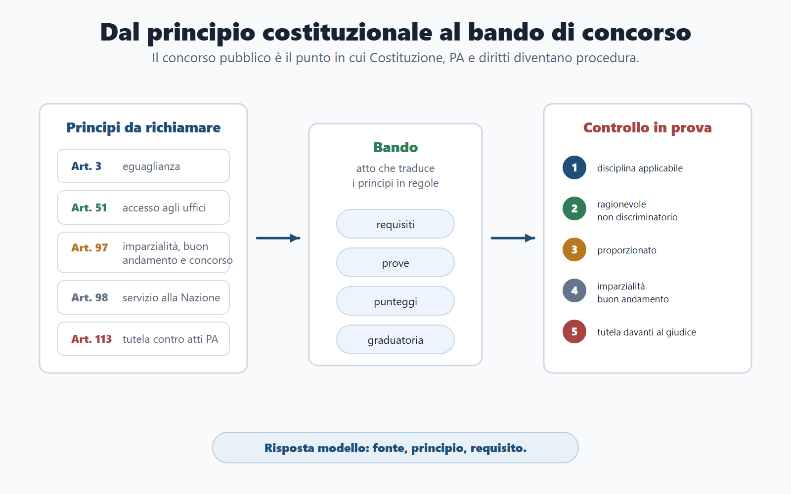

VOL-01 · Capitolo 04
Parte II · Materie comuni
Costituzione e
ordinamento dello Stato
Il diritto costituzionale è la grammatica comune dei concorsi pubblici. Non serve soltanto a ricordare articoli o organi. Aiuta a capire da dove nasce il potere pubblico, quali limiti incontra, come si producono le norme e perché la PA deve agire con legalità, imparzialità e buon andamento.
Schema
Organi costituzionali flussi

01 · Mappa di collegamento
Una domanda «amministrativa» può avere base costituzionale
Accade per l’accesso agli impieghi, l’eguaglianza, la responsabilità, il riparto Stato-Regioni, le libertà, Parlamento e Governo, la tutela contro gli atti della PA. Non basta ricordare gli articoli: vanno collegati a poteri, limiti, diritti e amministrazione.

Schema di risposta: definizione, articolo o fonte, funzione, esempio, errore da evitare.
02 · BANDO
Come usare questo capitolo sul bando
| Come usarlo | Se la salti | |
|---|---|---|
| B — Bando | Cerca formule come Costituzione, ordinamento, fonti, diritti, Parlamento, Governo, Presidente, Regioni, magistratura, Corte costituzionale, UE. | Studi un compendio, non il programma reale. |
| A — Aree | Collega a amministrativo, pubblico impiego, enti locali, trasparenza, responsabilità, concorsi, procedimento e giustizia amministrativa. | Tratti il costituzionale come materia isolata. |
| N — Nuclei | Prima organi, procedimento legislativo, Governo, Presidente, Regioni, magistratura, Corte, fonti e diritti. | Memorizzi articoli senza funzione. |
| D — Diario | Registra: forma di Stato/governo, Presidente che «governa», decreto-legge/decreto legislativo, riparto Stato-Regioni. | Ripeti le stesse confusioni in prova. |
| O — Output | Mappa dello Stato, tabella organo/funzione, dieci risposte orali, griglia fonti/atti/controlli. | Sai i nomi, non spieghi i rapporti. |
03 · Distinzioni di base
Stato, Costituzione, forma di Stato, forma di governo
Lo Stato è un ordinamento politico-giuridico con popolo, territorio e sovranità, esercitata nei limiti della Costituzione, del diritto internazionale e dell’ordinamento europeo. La cittadinanza non è residenza né semplice presenza sul territorio.

Errore da concorso: trattare questi quattro nuclei come se fossero la stessa cosa.
04 · Principi fondamentali
Artt. 1-12: conseguenze, non recitazione
In prova i principi non vanno recitati meccanicamente. Vanno collegati alle conseguenze giuridiche e amministrative. Il più usato nei concorsi è spesso l’eguaglianza: formale (pari dignità e pari trattamento) e sostanziale (rimozione degli ostacoli).
| Principio | Uso nei concorsi |
|---|---|
| Lavoro e democrazia | Repubblica fondata sul lavoro; sovranità del popolo. |
| Eguaglianza | Requisiti nei bandi, pari trattamento, non discriminazione, ragionevolezza. |
| Autonomie | Regioni, Comuni, Province, Città metropolitane, decentramento: non uffici periferici. |
| Ordinamento internazionale e art. 11 | Limiti alla sovranità, asilo, UE e organizzazioni internazionali. |
| Cultura, paesaggio, ambiente, sport | Artt. 9 e 41 (ambiente, biodiversità, ecosistemi); art. 33 (valore dell’attività sportiva): il testo vigente non coincide sempre con i vecchi manuali. |
05 · Fonti
Quale fonte prevale, chi disciplina, quale atto può usare la PA
Le fonti sono atti o fatti idonei a produrre norme. Servono a tre domande di prova: quale fonte prevale, chi può disciplinare una materia, quale atto può usare la PA.
| Livello | Esempi | Funzione |
|---|---|---|
| Costituzionali | Costituzione e leggi costituzionali. | Fondano e limitano l’ordinamento. Revisione con art. 138, non con legge ordinaria. |
| Primarie | Legge, decreto-legge, decreto legislativo, leggi regionali nei rispettivi ambiti. | Vincolano le fonti secondarie. Riserva di legge: limiti ai diritti e scelte essenziali non restano alla sola PA. |
| Secondarie | Regolamenti governativi, ministeriali, regionali, locali. | Attuano, integrano o organizzano, nei limiti della legge. |
| Europee | Trattati, regolamenti, direttive, decisioni. | Regolamento direttamente applicabile; direttiva vincola al risultato e di norma richiede attuazione. |
Vacatio legis: di regola 15 giorni dalla pubblicazione. Abrogazione espressa, tacita o da nuova disciplina dell’intera materia.

06 · Diritti e rapporti
Il bene protetto decide la libertà
Nei quiz le libertà civili (artt. 13-28) vengono confuse tra loro. La chiave è il bene: corpo e libertà fisica, casa, comunicazioni, movimento, riunione, associazione, fede, parola, difesa processuale. Libertà di circolazione non è libertà personale; associazione non è riunione né partito.
Rapporti etico-sociali ed economici
Famiglia, salute (diritto dell’individuo e interesse della collettività), scuola, cultura, paesaggio e ambiente. Lavoro tutelato; iniziativa economica libera ma con limiti di utilità sociale, sicurezza, dignità, salute e ambiente; proprietà riconoscibile e limitabile, con indennizzo in caso di espropriazione.
Rapporti politici e doveri
Voto personale, eguale, libero e segreto; elettorato attivo e passivo; partiti con metodo democratico. Referendum abrogativo e costituzionale (art. 138) non coincidono. Doveri: difesa, concorso alle spese secondo capacità contributiva, fedeltà, funzioni pubbliche con disciplina e onore: ponte verso il pubblico impiego.
07 · Parlamento e legge
Bicameralismo paritario e procedimento legislativo
Camera e Senato hanno, in linea generale, le stesse funzioni legislative e partecipano entrambe al rapporto di fiducia. I parlamentari rappresentano la Nazione senza vincolo di mandato. Legislatura ordinaria: cinque anni, salvo scioglimento anticipato.
Iniziativa
Governo, parlamentari, popolo, CNEL, Consigli regionali nei casi previsti.
Approvazione
Stesso testo da entrambe le Camere. Commissioni in sede referente, redigente o deliberante.
Promulgazione
Il Presidente può rinviare con messaggio motivato; se le Camere riapprovano, deve promulgare. Poi pubblicazione e vacatio.
Confondere Parlamento e Governo. Il Parlamento approva leggi, controlla e indirizza politicamente; il Governo dirige l’indirizzo politico-amministrativo e risponde davanti alle Camere.
08 · Atti con forza di legge
Decreto-legge e decreto legislativo non coincidono
Entrambi sono atti del Governo con forza di legge. La differenza decisiva è il presupposto: urgenza e conversione, oppure delega preventiva. La legge 400/1988 è il riferimento ordinario per organizzazione del Governo e potestà normativa governativa.
| Decreto legislativo | Decreto-legge | |
|---|---|---|
| Presupposto | Legge delega: oggetto, principi e criteri direttivi, tempo e limiti. | Casi straordinari di necessità e urgenza. |
| Controllo parlamentare | Delega preventiva; il Parlamento fissa i binari. | Conversione in legge entro sessanta giorni. |
| Se manca il seguito | La delega scade; non si emana oltre i limiti. | Se non convertito, perde efficacia sin dall’inizio, salvo legge che regoli i rapporti sorti. |
| Regolamento | Fonte secondaria, subordinata alla legge: non ha forza di legge. Non va messo nello stesso cassetto dei decreti. | |
09 · Presidente della Repubblica
Garanzia e unità nazionale, non capo dell’indirizzo politico
Eletto dal Parlamento in seduta comune, integrato dai delegati regionali. Cittadino, almeno cinquanta anni, diritti civili e politici. Durata: sette anni. Supplenza: Presidente del Senato. Responsabilità: alto tradimento e attentato alla Costituzione. Gli atti richiedono, di regola, controfirma ministeriale.
| Potere | Uso da concorso |
|---|---|
| Nomina del Governo | Presidente del Consiglio e ministri secondo il procedimento costituzionale. |
| Promulgazione e rinvio | Controllo di garanzia; richiesta motivata di nuova deliberazione. |
| Scioglimento delle Camere | Potere di garanzia, nei limiti costituzionali, non «scelta di governo». |
| Messaggi, grazia, onorificenze, Consiglio supremo di difesa | Funzioni specifiche di rappresentanza e garanzia, non di indirizzo ordinario. |
10 · Governo
Fiducia, indirizzo, responsabilità
Il Governo è composto dal Presidente del Consiglio, dai ministri e dal Consiglio dei ministri. Il Presidente del Consiglio dirige la politica generale, mantiene l’unità dell’indirizzo e coordina i ministri. Deve ottenere la fiducia delle Camere; può cessare per crisi parlamentare o extraparlamentare. La mozione di sfiducia revoca il sostegno politico.
Che cosa fa
Dirige l’indirizzo politico-amministrativo e risponde politicamente davanti al Parlamento. Partecipa alla produzione normativa con decreti-legge, decreti legislativi e regolamenti. I ministri dirigono i dicasteri e partecipano al Consiglio.
Come lo chiede la commissione
«Mi parli della forma di governo italiana»: definisci forma parlamentare, fiducia, ruolo del Parlamento, del Governo e del Presidente. Non trasformare il Presidente in capo politico: nella forma parlamentare l’indirizzo è del Governo con la fiducia delle Camere.
11 · PA nella Costituzione
Artt. 97 e 98, letti con 28, 51, 54 e 113
L’art. 97: buon andamento, imparzialità, accesso agli impieghi mediante concorso salvo i casi di legge. L’art. 98: i pubblici impiegati sono al servizio esclusivo della Nazione. Il concorso non è una formalità: tutela eguaglianza, imparzialità e qualità della selezione.
| Articolo | Che cosa devi saper fare |
|---|---|
| Art. 97 | Collegare organizzazione degli uffici, imparzialità, buon andamento e concorso pubblico. |
| Art. 98 | Spiegare il servizio alla Nazione, non a interessi personali, di parte o di gruppo chiuso. |
| Art. 28 | Responsabilità dei funzionari e dipendenti per atti in violazione di diritti. |
| Art. 51 e 54 | Accesso agli uffici pubblici e doveri di disciplina e onore. |
| Art. 113 | Tutela giurisdizionale contro gli atti della PA: ponte verso il diritto amministrativo. |

12 · Autonomie e organi ausiliari
La Repubblica è composta da Comuni, Province, Città metropolitane, Regioni e Stato
Le autonomie non sono meri uffici periferici. Art. 117: competenza esclusiva statale, concorrente, residuale regionale. Art. 118: sussidiarietà, differenziazione, adeguatezza. Art. 119: autonomia finanziaria e peculiarità delle isole. Art. 120: poteri sostitutivi. Il Comune non è «sotto» la Regione in senso gerarchico generale.
| Organo | Funzione essenziale | Parole chiave |
|---|---|---|
| CNEL | Consulenza economica e sociale; iniziativa legislativa nei limiti previsti. | Economia, lavoro, proposta. |
| Consiglio di Stato | Consulenza giuridico-amministrativa e giustizia amministrativa. | Pareri, ricorsi, tutela contro la PA. |
| Corte dei conti | Controllo contabile, preventivo e successivo; giurisdizione contabile. | Controllo, responsabilità, danno erariale. |
| Magistratura / CSM | Giurisdizione; giudici soggetti soltanto alla legge; CSM autogoverno della magistratura ordinaria; azione penale obbligatoria. | Indipendenza, giusto processo, PM. |
13 · Corte e revisione
Quindici giudici, quattro attribuzioni, art. 138
Cinque nominati dal Presidente della Repubblica, cinque eletti dal Parlamento in seduta comune, cinque eletti dalle supreme magistrature. Durata nove anni, non rieleggibili. La Corte non è un terzo ramo politico: è giudice costituzionale.
Funzioni
Legittimità costituzionale delle leggi e degli atti con forza di legge di Stato e Regioni; conflitti di attribuzione tra poteri, tra Stato e Regioni e tra Regioni; accuse contro il Presidente della Repubblica; ammissibilità del referendum abrogativo. Accoglimento: la norma esce dall’ordinamento; rigetto: non impedisce di riproporre la questione in altro contesto.
Revisione (art. 138)
Due deliberazioni per Camera, intervallo non inferiore a tre mesi. Seconda deliberazione: almeno maggioranza assoluta. Se non si raggiunge i due terzi, può esserci referendum (un quinto di una Camera, 500.000 elettori o cinque Consigli regionali). Con i due terzi, niente referendum. Art. 139: la forma repubblicana non è oggetto di revisione.
14 · UE, CEDU, tutela multilivello
Tre idee, senza confondere gli strumenti
Istituzioni da conoscere: Parlamento europeo, Commissione, Consiglio europeo, Consiglio dell’UE, Corte di giustizia, BCE. Artt. 11 e 117 Cost. collegano limitazioni di sovranità e vincoli europei. La CEDU e la Carta dei diritti UE non coincidono: sistemi diversi, entrambi nella tutela multilivello.
| Idea | Che cosa significa in prova |
|---|---|
| La Costituzione resta il riferimento supremo interno | Non si «sospende» perché esiste il diritto europeo. |
| Il diritto UE può prevalere con primato ed effetto diretto | Regolamento vs direttiva: applicabilità diretta vs attuazione. |
| La CEDU è parametro esterno | Incide su interpretazione e controllo di compatibilità, secondo la giurisprudenza costituzionale. Non è formula risolutiva generica sui concorsi. |
15 · Caso guidato
Requisito concorsuale e principi costituzionali
Un Comune bandisce un concorso per istruttori. Il bando richiede un requisito molto specifico, non chiaramente collegato alle mansioni. Alcuni candidati sostengono che favorisca un gruppo ristretto.
Qualifica
Non è solo diritto amministrativo. Coinvolge eguaglianza, imparzialità, buon andamento, accesso agli uffici e concorso. La PA può stabilire requisiti, ma devono essere previsti dalla disciplina applicabile, ragionevoli, proporzionati e coerenti con il profilo.
Risposta modello
Valutare il requisito alla luce degli artt. 3, 51 e 97 Cost. Selezionare personale adeguato ai fabbisogni è lecito; introdurre requisiti irragionevoli o sproporzionati no. Il concorso tutela imparzialità, buon andamento ed eguaglianza. Il bando deve essere coerente con la legge, il profilo e l’interesse pubblico.
16 · Verifica
Due domande da saper spiegare
Rapporto tra forma parlamentare, Governo e Presidente
La forma di governo parlamentare si fonda sul rapporto fiduciario tra Parlamento e Governo. Il Governo dirige l’indirizzo politico-amministrativo e risponde politicamente davanti alle Camere. Il Presidente rappresenta l’unità nazionale e svolge funzioni di garanzia, non di indirizzo politico ordinario. Nomina, promulgazione, rinvio, scioglimento e messaggi si inseriscono in questo equilibrio: il Presidente non sostituisce Parlamento e Governo.
Decreto-legge e decreto legislativo sono la stessa cosa perché entrambi hanno forza di legge?
No. Entrambi sono atti del Governo con forza di legge, ma i presupposti differiscono. Il decreto legislativo nasce da legge delega; il decreto-legge da necessità e urgenza e va convertito entro sessanta giorni. La trappola prende l’elemento comune (forza di legge) e nasconde la differenza decisiva.
17 · Da tenere ferme
Cinque regole, con il perché
1. La Costituzione è fonte suprema e organizza principi, diritti, doveri, poteri e garanzie. Perché senza gerarchia ogni atto sembra equivalente.
2. La forma di governo è parlamentare: il Governo deve avere la fiducia delle Camere. Perché il Presidente non «governa» e Parlamento e Governo non coincidono.
3. Le fonti si studiano con gerarchia, competenza, riserva di legge, abrogazione e rapporto con UE e CEDU. Perché la domanda da concorso è «quale atto, chi, con quale limite».
4. La PA ha base costituzionale: artt. 97 e 98, concorso, responsabilità, tutela contro gli atti. Perché amministrativo e pubblico impiego nascono qui.
5. Gli organi si studiano per funzioni e rapporti, non come nomi isolati. Perché in prova conta chi dà la fiducia, chi promulga, chi emana decreti, chi giudica sulla legge.
Prossimo capitolo
Diritto amministrativo operativo
Dalla grammatica costituzionale all’azione: come decide la PA, con quale procedimento, quale provvedimento, quali accessi, quale silenzio e quali rimedi.